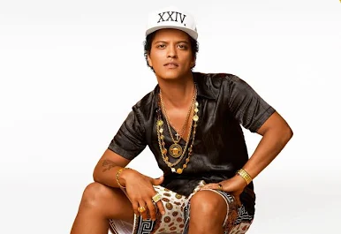

| Image |
Act Info |
Website |
Bruno Mars
 |
This multi-talented artist is celebrated for his energetic performances and a repertoire that spans funk, R&B, and pop. With numerous chart-topping hits, Bruno's show is guaranteed to be a highlight of Tuff Festival! |
brunomars.com |
Billie Eilish
 |
Billie Eilish: A groundbreaking pop artist known for her haunting vocals and innovative sound. With multiple Grammy awards under her belt, Billie combines deep lyrical content with compelling visuals. Her performance promises to be an immersive experience.
|
billieeilish.com |
Playboy Carti
|
Vamp King (homixide): Playboi Carti is known for his unique style and energetic performances, often blending elements of hip-hop and punk rock. With a distinct voice and catchy ad-libs, he has carved a niche in the music industry, gaining a massive following. His songs, while often containing mature themes, reflect a carefree spirit and bold creativity that resonates with many fans. Carti's electrifying stage presence and dynamic tracks make his performances an exhilarating experience; he's recognized for bringing a fresh and unapologetic vibe to the modern rap scene. Despite not being traditionally family-friendly, his music showcases an authentic artistic expression that captivates a diverse audience. |
playboicarti.com |
Khalid
 |
Khalid: This rising star in the R&B scene is known for his smooth vocals and relatable lyrics. Khalid’s performances resonate with a wide audience, and he’s sure to provide a memorable Saturday night experience. |
khalidofficial.com |
Tame Impala
 |
Tame Impala: Led by Kevin Parker, this psychedelic music project blends rock with electronic elements, creating a unique soundscape. Their innovative style will provide an engaging experience for festival-goers looking for something out of the ordinary.
|
tameimpala.com |
Dua Lipa
 |
Dua Lipa: A modern pop sensation recognized for her catchy hooks and empowering anthems. With her unique style and dynamic stage presence, Dua will deliver an unforgettable performance. Expect an electric atmosphere! |
dualipa.com |